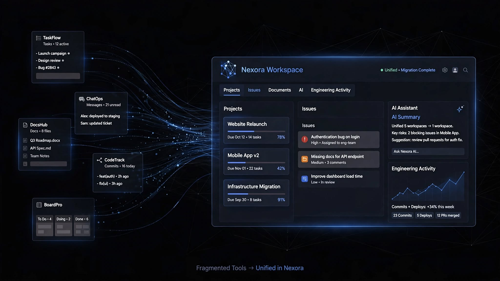
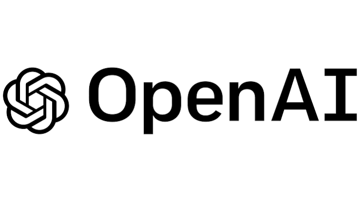
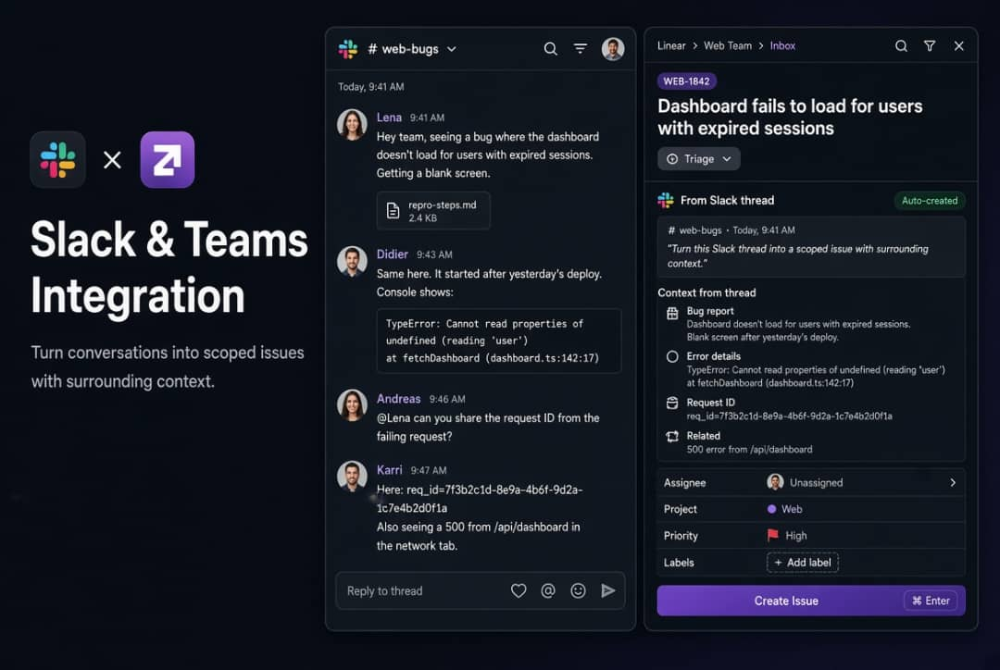
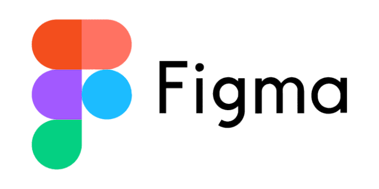
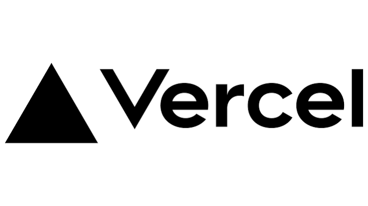

One connected workspace
Keep product planning, engineering execution, customer feedback, and operational workflows connected in one environment.
Bring projects, issues, product planning, engineering workflows, and team collaboration together in Nexora. Switching doesn't have to mean starting over.

Nexora gives product, engineering, design, and operations teams one connected place to plan work, coordinate execution, and understand what's happening across the organization.
Keep product planning, engineering execution, customer feedback, and operational workflows connected in one environment.
Move your team's existing projects, issues, workflows, and important information into a workspace designed for continuous delivery.
Give every team a shared view of priorities, progress, blockers, milestones, and the work that matters most.
Create a focused workspace around your team's current priorities instead of rebuilding your processes from scratch.
Organize the transition around the work your team already understands, then progressively connect the systems and workflows you rely on.
Identify the projects, teams, workflows, integrations, and information that should move into Nexora.
Organize your existing projects and work into a structure that gives teams a clear shared source of truth.
Connect development, communication, documentation, automation, and other systems your organization already uses.
Give your teams the visibility and workflow automation they need to keep work moving from idea to delivery.
Nexora connects the stages of work that are often separated across different systems, giving teams greater visibility from intake through delivery.
Capture requests, ideas, customer feedback, and new opportunities.
Turn priorities into roadmaps, initiatives, milestones, and actionable plans.
Connect engineering work with projects, agents, development tools, and automation.
Track changes, reviews, pull requests, and delivery progress.
Understand progress, identify blockers, and keep teams aligned.

Connect the services your teams already depend on while bringing the core workflow into Nexora.

Connect AI-assisted workflows and intelligent automation to your team's work.

Keep conversations and important product information connected to execution.

Connect design work with the projects and initiatives responsible for delivery.

Connect engineering workflows with the tools used to build and deploy your products.
A successful transition starts with the workflows, information, and team habits that already matter. Nexora gives you a foundation for bringing those pieces together and improving them over time.
Your transition can be organized around the projects, issues, workflows, and information your organization needs to continue using.
Yes. Product, engineering, design, operations, customer teams, and leadership can work from the same connected workspace.
Nexora is designed around connected workflows, allowing teams to integrate the services that remain important to their daily work.
If your organization has specific migration or workflow requirements, contact the Nexora team to discuss your setup.
Bring your teams, workflows, and tools together in one workspace designed for modern product development.